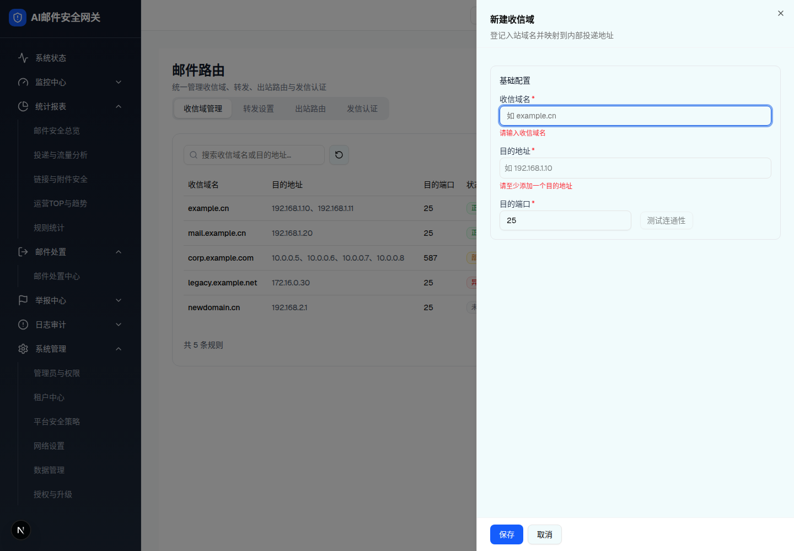
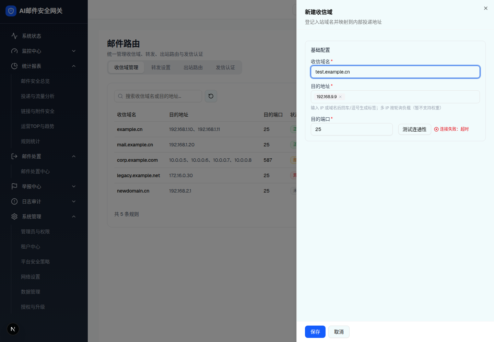
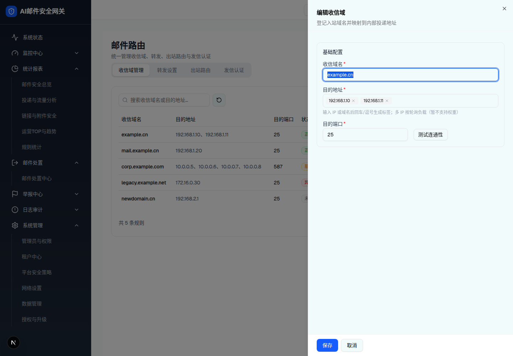

| 所属组件 | 2.3 收信域管理 Tab |
| 触发路径 | 层级0 工具栏「新建」/ 行内「编辑」/ 空态「立即添加」→ 右侧 Sheet 抽屉（sm:max-w-xl，遮罩点击/取消/×/保存成功 关闭） |
| 抽屉标题 | 「新建收信域」/「编辑收信域」+ 副标题「登记入站域名并映射到内部投递地址」 |
预览可操作：输入收信域名实时校验（格式 / 与 mock 列表去重）；目的地址 TagInput 回车/逗号/失焦生成标签、× 移除、非法值红字「需为合法 IP 或域名」；端口范围校验；「测试连通性」需至少 1 个目的地址，点击后 0.9s 随机 连通正常/连接失败；「保存」有错则 Toast「请修正表单中的校验错误」，无错 Toast「收信域已添加」。

| 字段 | 规格（浏览器实测） |
|---|---|
| 收信域名 * | Input，占位「如 example.cn」；校验链：必填「请输入收信域名」→ isDomain「域名格式不正确」→ 去重（大小写不敏感、排除自身）「收信域名已存在，不可重复添加」 |
| 目的地址 * | TagInput；hint「输入 IP 或域名后回车/逗号生成标签；多 IP 按轮询负载（暂不支持权重）」；逐项 isHostOrIp 校验，失败红字 + AlertTriangle「需为合法 IP 或域名」；空列表错误「请至少添加一个目的地址」 |
| 目的端口 * | Input type=number，默认 25；「端口范围 1-65535」 |
| 测试连通性 | outline sm 按钮，与端口同排；禁用条件：无目的地址 或 测试中；三态 TestResultTag：测试中…（旋转）/ 绿「连通正常」/ 红「连接失败：超时」（0.9s mock，70% 成功率） |
| 底部操作 | 「保存」蓝底 / 「取消」outline；保存成功关抽屉 + Toast「收信域已添加/已更新」，新建 status=unchecked、lastProbeTime 不变 |
| 比对项 | demo 实际 DOM | 嵌入的 HTML | 是否一致 |
|---|---|---|---|
| 根节点 | div[role=dialog][data-state=open]（SheetContent sm:max-w-xl p-0 flex flex-col） | 同（规格侧中和 fixed 定位） | 一致 |
| 区块卡片 | 1 个 SectionCard「基础配置」 | 同 | 一致 |
| 初始错误红字数 | 2（域名必填 + 目的地址必填；端口 25 合法无错） | 同 | 一致 |
| 测试按钮 disabled | disabled（targetHosts 为空） | 同 | 一致 |
| 节点数 | 35 | 35 | 一致 |

screenshots/receiving-drawer-testing.png（按钮禁用 + 「测试中…」）| 比对项 | demo 实际 DOM | 嵌入的 HTML | 是否一致 |
|---|---|---|---|
| 标签 chip | 1 个（192.168.9.9，Tooltip 触发器 + × 按钮 aria-label「移除 192.168.9.9」） | 同 | 一致 |
| 错误红字 | 0（全部消除） | 同 | 一致 |
| 测试结果 | span.text-red-600「连接失败：超时」 | 同 | 一致 |
| 节点数 | 45 | 45 | 一致 |

| 比对项 | demo 实际 DOM | 嵌入的 HTML | 是否一致 |
|---|---|---|---|
| 标题 | 「编辑收信域」 | 同 | 一致 |
| 标签 chip 数 | 2（192.168.1.10 / 192.168.1.11） | 同 | 一致 |
| 节点数 | 46 | 46 | 一致 |